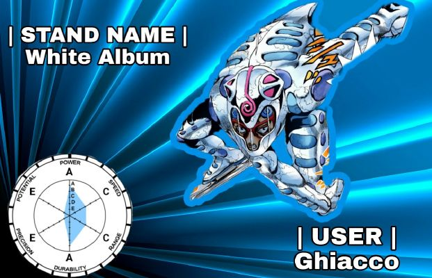
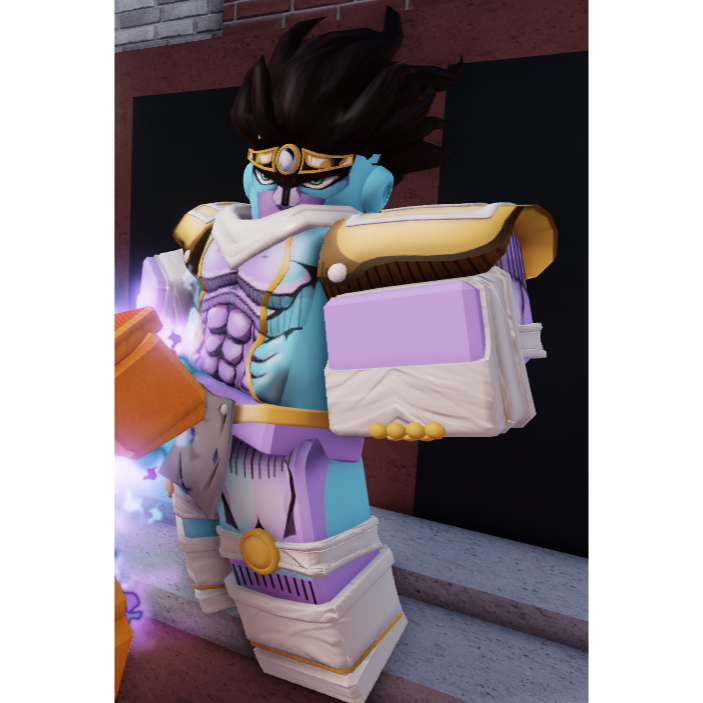

Este stand permite al usuario tener una armadura y controlar la temperatura a su alrededor, ya sea a larga o a corta distancía este stand tienes varias habilidades las cuales son muy buenas para combear gente, hasta el punto en el que puedes hacer un combo one shot solo dependiendo de tu tipo o estilo de pelea su habilidad Gently Weeps permite crear particulas congeladas a su alrededor, practicamente este seria invencible contra proyectiles

Consejos, trucos y combos (esta sección requiere una revisión después del rework)
Árbol de habilidades
No se recomienda comprar actualizaciones para Gently Weeps. La habilidad solo contrarresta duramente un puñado de stands en el juego, soportes para los cuales WA ya está bien equipado. Cuando Gently Weeps está en enfriamiento, Flash Freeze puede proporcionar cobertura y Ice Skating permite que WA mantenga la distancia contra los stands de proyectiles o los derribe.
Dado que los enemigos no usarán proyectiles mientras Gently Weeps esté activo, es mejor usarlo en la predicción o reacción a un proyectil. Algo que se hace más difícil con las actualizaciones, ya que aumentan el tiempo de reutilización de la habilidad.
Gently Weeps
Soft & Wet Moisture Plunder se desvía por completo usando Gently weeps
El Vola Barrage de Aerosmith se desvía por completo con Gently Weeps.
Si estás luchando contra un Stand que tiene múltiples proyectiles como TWAU, es mejor usar Gently Weeps para contrarrestar sus proyectiles.
Las bolas giratorias también se redireccionan hacia el usuario, ya que son proyectiles.
Mantenga Y activo tanto como sea posible, especialmente en el segmento Bridge de Steel Ball Run o luchando contra soportes o equipos de proyectiles. Incluso fuera de estas peleas, puede ser útil debido a la ralentización pasiva.
Debido a la rotación infinita pasiva, Tusk (Acto 4) NO se ve afectado por Gently Weeps. Ten cuidado cuando te enfrentes a sus proyectiles.
Flash Freeze
Flash Freeze es uno de los movimientos que caracteriza a White Album, ya que este es un movimiento de area, el cual inflinge 30 de daño, lo cual equivale a un 6.6% de la vida del oponente, si de por si sirve para finalizar un combo o
romper un combo este es un movimiento cancelable pero no puede obtener un Parry{}
SoftAndWet Go Beyond
Este stand como en el manga permite la creación de burbujas funcionales inexistentes que van fuera de la realidad despues de fusionarse con el Stand de Kira Yoshikague de la Parte 8 Killer Queen este potencia sus habilidades, ademas de poder colocar bombas en cualquier lugar que desee el usuario, este stand esta en este top por el simple hecho que sus combos no pueden ser detenidos, hasta que el usuario se quede sin habilidades por usar
Combos, consejos y fallas
Soft & Wet es un semi-zoner con altas capacidades ofensivas, ya que Shovel Barrage es un movimiento de daño medio.
Sin embargo, Friction Beatdown y Friction Plunder pueden permitirte confirmar Go Beyond.
Friction Plunder se puede anular bloqueando, así que utilízalo solo si obtienes un bloqueo perfecto, un bloqueo perfecto o tomas a tu oponente con la guardia baja. Alternativamente, podrías tratar de engañar al enemigo haciendo Barrage rápidamente y luego spam Friction Plunder, ya que este movimiento tiene armadura, pero es poco probable que funcione contra mejores jugadores.
Bubble Prison aturde durante tanto tiempo que puede confirmar básicamente cualquier otro movimiento, incluso Friction Beatdown o Go Beyond. (Tenga en cuenta que cualquier daño infligido al oponente que INCLUYE daño por sangrado cancelará el aturdimiento).
Go Beyond es mejor con giro, ya que hace 47,5 de daño con Hamon y 51,7 de daño con Spin (sin tener en cuenta la resistencia al daño).
Bubble Generation cura una cantidad considerable, así que úsalo cuando tengas espacio para respirar o mientras tu oponente está en Bubble Prison. También es un buen contador contra Time Stop, ya que flotarás bastante alto en el aire mientras recuperas algo de salud.
Go Beyond se puede evitar corriendo a través de él en el momento correcto. La burbuja detonará, pero no se infligirá ningún daño.
Y - Bubble Prison Soft & Wet crea una burbuja, atrapando a la víctima dentro de ella, este movimiento inflige 30 de daño y explota después de un breve período de tiempo, la burbuja explota antes si la víctima sufre algún daño. Este movimiento se puede parar y romper bloques.
T - Shovel Barrage Soft & Wet agarra una pala y realiza 5 golpes rápidos, los 3 primeros golpes causan 5 daños, los 2 golpes finales causan 10 daños y el último golpe muñecos de trapo. El primer golpe se puede parar y los 2 últimos golpes se bloquean.
Z - Vision Plunder Soft & Wet lanza una burbuja al cursor, si aterriza, causa 30 de daño y ciega a la víctima temporalmente, la persiana simplemente hace que la pantalla se oscurezca extremadamente. Este movimiento se puede bloquear.
X - Moisture Plunder Después de un breve período de tiempo, Soft & Wet crea una barrera de burbujas frente a ti, si el oponente la atraviesa, recibirá un daño rápido de 1.3 y quedará aturdido. Este movimiento se puede bloquear y se puede usar como un extensor combinado. (1.7 completamente actualizado, 2.1 con Hamon)
Star Platinium No Requiem
Star Platnium No Requiem es un stand el cual requiere habilidad para usarlo y si la tienes considerate alguien muy bueno en pvp, ya que el daño que produce este es muy algo comparado a otros stands, sus habilidades se recargan tan rapido que este es capaz de generar un combo infinito combinado con el estilo de pelea de boxeo que sus habilidades igualmente se recargan rapido genera un daño infinito si aquel que lo usa tiene skill
Habilidades
LMB - Puñetazo: este movimiento corto con un tiempo de reutilización corto inflige 8,9 de daño con el máximo poder destructivo y se puede combinar 5 veces, en última instancia, inflige 44,5 de daño si todos golpean.
E - Barrage: Star Platinum realiza una ráfaga de golpes asombrosamente rápida que inflige un pequeño daño por golpe. Se ha cambiado el efecto de sonido de la andanada. (1,5 al máximo poder destructivo por golpe) 1,8 con modo de rabia.
R - Barrage Finisher: Star Platinum lanza un fuerte puñetazo que convierte a la víctima en un muñeco de trapo. Rompe bloque pero PUEDE bloquearse perfectamente. (17.7 daño máx.)
T - Star Finger: Star Platinum extiende su dedo y apuñala al objetivo en los ojos, aturdiendo y cegando al objetivo, si el movimiento golpea, haría que la pantalla de la víctima se pusiera roja y borrosa. Lo cual es bueno para comenzar combos pero puede bloquearse. (24.2 de daño máximo) Este movimiento es similar a Eye Gouge del Boxing reelaborado previamente, pero tiene más alcance y daño y un poco menos de aturdimiento. Esta es la única opción de rango de Star Platinum.
Y - Ora Kicks: Star Platinum realiza una ráfaga de patadas que infligen poco daño por golpe, luego gira en su lugar para realizar un poderoso golpe de codo, derribando al enemigo. (Las patadas reparten 2,5, y la patada final reparte 11,5 con el poder destructivo máximo. Tenga en cuenta que la patada final es una verdadera ruptura de bloqueo, lo que significa que no se puede parar ni bloquear). Este movimiento se puede bloquear perfectamente en la primera patada del aluvión. .
G - Inhale: Star Platinum inhala el aire con tanta fuerza que hace que las personas cercanas a usted se acerquen al usuario. Este movimiento es bueno para extender combos o contra corredores. El oponente puede bloquear mientras está atraído y puede bloquear y desbloquear libremente durante el movimiento. El oponente también puede bombardear durante esta inhalación, pero aún puedes meterlo dentro de un combo si obtienes algo del segundo bombardeo. No puedes usar Time Stop mientras Inhale está activo.
Z - Salto de tiempo: teletransporta al usuario donde sea que esté el cursor del mouse con un alcance limitado. (Time Stop tendrá un tiempo de reutilización breve después de esto).
H - Rage Mode: cuando Rage Meter está lleno, puedes activar Rage Mode, que otorga a Star Platinum un aumento de daño del 25 % y una reducción del daño del 20 %, similar al Golden Skin de Spin. Cuando está completamente actualizado, el modo Rage dura 50 segundos.
J - The World (modo Rage): Star Platinum detiene el tiempo por un corto período de tiempo. La duración máxima de Time Stop es de 5 segundos. Esto solo se puede usar cuando el modo de ira está activo y una vez que usa el modo de ira y la parada de tiempo, su barra de ira se agotará por completo a menos que cancele la parada de tiempo antes.
X - Stand Jump: Tú y Star Platinum saltan alto en el aire. La altura del salto varía según la cantidad de mejoras que tengas y te lanzará el doble de lejos durante una parada de tiempo gracias a la reducción de la gravedad. El mundo también puede usar este movimiento.
Silver Chariot No Requiem
Al igual que Star Platnium No Requiem este requiere de gran habilidad para usarlo y produce un daño increiblemente alto tanto hasta el punto de poder derrotar a jefes como Dio Over Heaven en un instante, y sabemos que este posee el quintuple de vida que una persona normal y podiendose curar contantemente , este stand proporciona al usuario un guerrero con una armadura que al sacarla este obtiene mas velocidad, combinado a un estilo de pelea que lo mantenga en pie este stand puede ser el top 1 si no se requeriera mucha habilidad para usarlo
Habilidades
LMB: Chariot usa su estoque para golpear a su víctima, infligiendo 6.7 de daño. Combo máximo de 5. Inflige un total de 33,5 de daño si todos golpean.
RMB: Igual que R, pero es cancelable y más débil, infligiendo 9.3 de daño. Se recomienda usarlo para romper el bloqueo del oponente en lugar de R debido a la velocidad muy rápida sin armadura.
E - Stand Barrage: Este es uno de los bombardeos más exclusivos del juego. Chariot apuñala rápidamente a la víctima varias veces con su estoque, infligiendo 1.1 de daño por golpe. Sin su armadura, este es uno de los bombardeos más rápidos del juego. Sin embargo, tiene un rango más pequeño que el aluvión de otros puestos, gracias a esto puedes ganar un intercambio de aluvión simplemente caminando hacia atrás y bloqueando rápidamente.
R - Stand Barrage Finisher: un finalizador único: Chariot apuñala al oponente con buena fuerza e inflige 13.3 de daño.
Z - Last Shot: Chariot lanza su estoque, usándolo como proyectil e infligiendo un buen daño al oponente. El proyectil puede rebotar en las paredes e infligir 12 de daño al contacto. Este movimiento redirige al jugador más cercano cuando rebota en algo. Esto también aplica un ligero aturdimiento y es bueno para iniciar combos o aplicar presión si el oponente corre para posar. Este movimiento es imbloqueable.
H - Shed Armor Esto quita la armadura de Chariot durante 20 segundos. Con la armadura de Chariot desactivada, su bombardeo, LMB y RMB son mucho más rápidos y tienen menos retraso final e inicio. A diferencia del anime/manga, no baja tu defensa.
T - Million Pricks: Golpea al oponente con muchos golpes de bajo daño que infligen 0.7 de daño cada pinchazo; en total, esto inflige 35 de daño. Esto dura mucho tiempo y el oponente no puede devolver el golpe durante el ataque, pero puede atacar. Este movimiento también hace que los contadores sean ineficaces, ya que la cadena de cortes continuará incluso cuando se contrarreste el golpe inicial. Los golpes se pueden bloquear, pero después de un corto tiempo se romperá el bloque si sigue bloqueando, sin importar cuánta robustez tenga.
Y - Cycle Slash: un corte defensivo de 360 grados que golpea 6 veces y reparte 5,3 cada golpe. Tiene hiper-armadura y se puede actualizar para tener mayor alcance. Este movimiento es bloqueable.
Star PLatnium Requiem
Esta version de Star Platinium es diferente a la que no obtiene el Requiem ya que en su forma requiem este obtiene mucho mas daño y la capacidad de parar el tiempo por 5 segundos, mucho mas tiempo que el Star Platnium No Requiem , las desventajas que este tiene es que su velocidad de ataque baja ligeramente comparada a la del No Requiem este no es apto para combos ya que este tumba al usuario al final de cada habilidad, pero se le añaden habilidades que pueden bajar tanto daño como si fuera toda la vida del jugador y por su habilidad de parar el tiempo este ya no necesita de habilidad ya que solo con parar el timpo puedes bajarle toda la vida al enemigo por que da tiempo de sobra para hacerlo

Habilidades
LMB - Puñetazo: este movimiento corto con un tiempo de reutilización corto que inflige 10,1 de daño con el máximo poder destructivo y puede combinarse 5 veces, en última instancia, inflige 50,5 de daño si todos los golpes golpean (12,6 con Hamon, 11,6 con Precisión de combate, 14,5 con ambos, causando masivamente 72,5 daño.)
E - Stand Barrage: SP:TW se mueve frente al usuario para lanzar una ráfaga de golpes rápidos mientras dice "Ora". (1,7 daños por golpe con el máximo poder destructivo).
R - Barrage Finisher: SP:TW se mueve frente al usuario y lanza un fuerte golpe ORA. (20,1 de daño con el máximo poder destructivo).
T - Platinum Slam: SP:TW rompe el suelo, inflige daño AoE y un retroceso increíble, aplastando a cualquiera que golpee. Esto hace alrededor de 24,4 de daño y tiene un tiempo de reutilización de 25 segundos. Este movimiento rompe bloques y se puede parar (¡NOTA!: UTILICE ESTE MOVIMIENTO SOLO CUANDO EL ENEMIGO ESTÉ CON LA GUARDIA DESPRENDIDA).
Y - Skull Crusher: si el cursor del mouse está sobre alguien, SP:TW detendrá el tiempo detrás de ellos y lanzará un puñetazo hacia su cabeza, aplastando su cráneo. Cualquier persona que sea golpeada con este movimiento puede resultar dañada mientras es manipulada. Esto tiene un tiempo de reutilización de 30 segundos y se puede bloquear. (22,5 de daño con el máximo poder destructivo).
H - The World: SP:TW detiene el tiempo por un corto período de tiempo y, a diferencia de su forma no evolucionada, Star Platinum, no requiere un medidor de ira. Esto tiene un tiempo de reutilización de 1 minuto y 10 segundos. Cada actualización agrega alrededor de 1 segundo a la parada de tiempo, y el máximo es de 8 segundos. También tiene un límite de daño del 50%.
J - Precisión de combate: similar al modo Rage, Combat Precision es un beneficio propio, excepto que no requiere una barra de ira. Este movimiento es similar al Awakening de Gold Experience Requiem. SP:TW grita "¡ORAAA!" y sus ojos comienzan a brillar de color azul claro mientras suena el tema de Jotaro/Stardust Crusaders. Durante este estado, no puedes quedar bloqueado y, mientras bloqueas, todos los ataques que se pueden bloquear perfectamente se bloquearán automáticamente. Además, tu velocidad al caminar aumenta y tu daño se mejora en un 15 %. Tras la activación, el usuario recuperará unos 25 HP. En la actualización máxima, este movimiento dura alrededor de 52 segundos, o 30,2 segundos sin actualizaciones. Esto tiene un tiempo de reutilización de 3 minutos y 40 segundos.
C - Ora Beatdown: SP:TW lanzará un puñetazo, similar a un puñetazo fuerte, que inflige 20,1 daños. Tras lo cual, realizará otro golpe para 20.1 y luego agarrará al oponente por el cuello. Luego, el jugador dice la línea de la firma de Jotaro, "Yare Yare Daze" (buen dolor), y luego SP: TW golpeará dos veces, cada una de las cuales inflige 10.1 dmg cada una. Por último, bombardeará al oponente por 1.3 dmg por golpe y lo terminará con un golpe que se escala con la cantidad de salud que le queda a tu oponente (hace más daño contra jugadores de menor HP). El tema de Jotaro se reproduce durante toda la paliza, que dura unos 10 segundos e inflige alrededor de 105 de daño en total (amplificado con beneficios como Combat Precision y Hamon), lo que agota una parte significativa de tu barra de salud. Este movimiento se puede parar. Este es un movimiento de ejecución.
X - Ora Kicks: Star Platinum: The World envía una ráfaga de patadas de alto daño que se pueden mejorar para tener mayor daño y velocidad. Este movimiento también se comparte con Star Platinum: la forma original del mundo: Star Platinum. Ora Kicks inflige 2,9 de daño (por patada), 13,4 de daño (patada final) con el máximo poder destructivo. Con la máxima velocidad de soporte, este movimiento sale casi instantáneamente y es difícil de detener, por lo que es una opción de daño muy confiable.
Z - Salto de tiempo: SP:TW usa su capacidad de detener el tiempo para teletransportarse una buena distancia a donde sea que apunte el mouse. Esto tiene un tiempo de reutilización de 10 segundos.